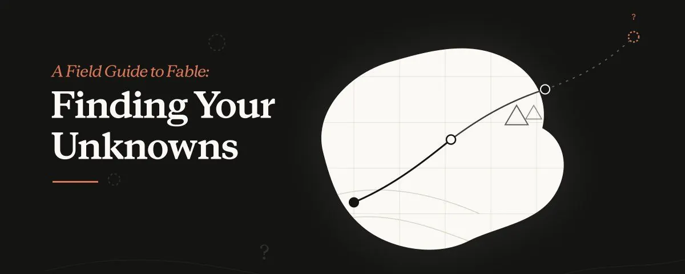
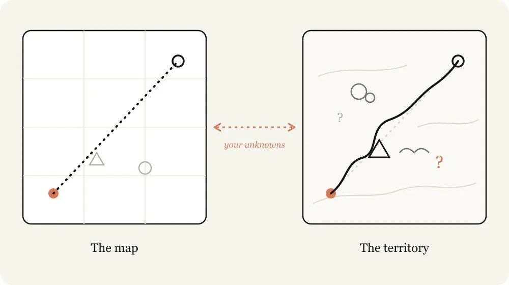
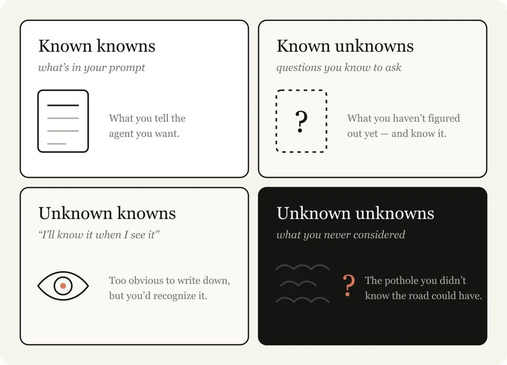
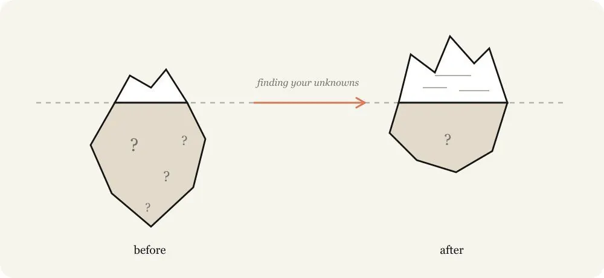
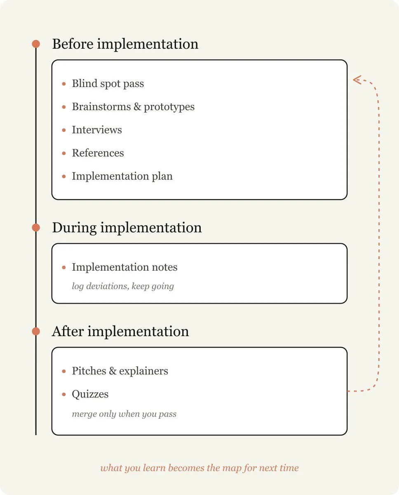
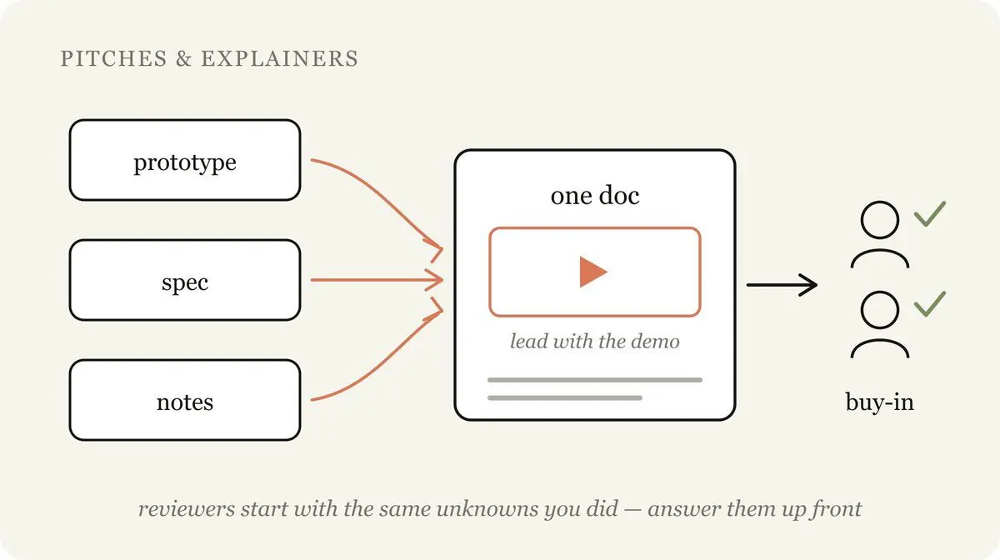

Thariq（@trq212）· Anthropic · 2026-07-04
A Field Guide to Fable: Finding Your UnknownsFable 实战指南：找出你的未知

60 秒速览：这篇文章在说什么
译者所加，不是原文的一部分 —— 读完这 8 条，再看原文会快很多。
- 一句话结论：用强模型干活时，作品质量的天花板不在模型能力，而在你能不能把自己「不知道什么」讲清楚。作者把这叫「找未知」，并认为这是智能体编程真正的核心技能。
- 核心比喻：地图不是实地。你写的提示词、技能、上下文是「地图」；代码库和真实约束是「实地」；两者之间的差距就是 unknowns（未知）。模型撞上未知时，只能按「你大概想要什么」去猜。
- 四格拆解：已知的已知（写在提示词里）、已知的未知（知道自己没想明白）、未知的已知（明显到不会写下来、看到就认得出）、未知的未知（压根没想到）。最后一格最贵，往往到实现很深处才暴露。
- 实现前五招：盲区扫描（让 Claude 列出你看不见的空缺）、头脑风暴与原型（把「看到才知道」的标准逼出来）、让 Claude 反过来采访你、给参照（最好的参照是源代码）、写实施计划（把最可能变的部分放最前面）。
- 实现中一招：让 Claude Code 维护一份 implementation-notes.md；遇到必须偏离计划的边界情况，选保守做法、记进 Deviations、继续走。
- 实现后两招：把原型、规格、笔记压成一份文档拿认可（开头先放演示）；再让 Claude 就这次改动考你，满分才合入——因为只看 diff 只能得到浅理解。
- 案例：Fable 的宣传片完全由 Claude Code 剪辑。作者不会剪视频、也不会调色，他的做法是每一步先让 Claude 教他，再动手——这就是「找未知」的完整演示。
- 一个反直觉点：指令太具体，Claude 会死守指令不敢转向；太含糊，它又会按行业最佳实践替你拍板。所以关键不是「说得更细」，而是「把起点和未知说清楚」。
常见做法：把活直接交出去
- 需求一次说完，直接让模型开写
- 撞到问题再回头改，改不动就重开
- 指望模型猜准「我想要什么」
- 设计好坏靠自己盯着屏幕反复调
- 只看代码 diff 就合入
- 东西做完直接丢给别人评审
本文：先把未知挖出来
- 开工前先做一次盲区扫描，把「不知道自己不知道」列出来
- 用原型把「看到才知道」的标准逼出来，再动真代码
- 让 Claude 反过来采访你，专问会改变架构的问题
- 用现成代码当参照，比用语言描述准确得多
- 写实施计划，把最可能变的部分顶到最前面
- 实现中记偏离，实现后考自己，再拿演示去换认可
这张对比卡是译者按正文归纳的，原文没有这张表。原文的立场更克制：这些不是必做清单，作者自己也说「不是每次都全用一遍」。
读法建议：先读第一节（地图与实地）和第二节（四格），把词汇立住；然后按「实现前 / 中 / 后」当工具箱用，哪一步卡住翻哪一段。最后一节是作者自己的完整复盘，适合通读一遍再回看前面的招式。
作者的老道理：地图不是实地。你交给 Claude 的提示词、技能、上下文是「地图」；代码库和真实约束是「实地」；两者之间的差距就是「未知」。模型越强，卡住你的往往不是它会不会写，而是你能不能把自己的未知讲清楚。
Working with Claude Fable 51 keeps re-teaching me an old lesson: the map is not the territory.
跟 Claude Fable 5 一起干活，一遍又一遍地把我教回同一个老道理：地图不是实地。
The map, a representation of the work to be done, is my prompts and skills and context, it’s what I give Claude. The territory is where the work needs to happen, the codebase, the real world, its actual constraints.
地图，是对要做的工作的一份表征，它就是我写的提示词、技能和上下文，是我交给 Claude 的那部分。实地，则是工作真正要发生的地方：代码库、真实世界，以及它实际存在的约束。

地图 vs 实地（题眼图） 左格是一张干净的方格地图：一条虚线从起点直达终点，中间标着一枚三角形。右格是同一段路在真实地形里的样子——路是弯的，有山丘、有雾、有问号，三角形被推着绕行。两张图中间那条橙色虚线，就是作者说的 unknowns。
原文图注：The map vs. the territory
这张图怎么看（3 条）
- 先看左图的虚线：它是一条「从起点到终点的直线」，代表你写在提示词里的计划——干净、可达、没有意外。
- 再看右图的实线：起点和终点一模一样，但路线被地形逼着拐了三次，还绕过了那个三角形。图上的问号（?）和雾团，就是你到实地才会发现的约束。
- 中间标着 your unknowns 的双向箭头，说明差距不是单向的：地图没画实地，实地也不完全服从地图。
一句话：计划是一份表征，不是现场；差距本身就是你要主动去找的东西。
The difference between the map and the territory is what I call unknowns. When Claude runs into an unknown, it needs to make a decision based on its best guess of what I want. The more work being done, the more unknowns Claude might run into
地图与实地之间的差距，就是我所说的未知（unknowns）。当 Claude 撞上一个未知，它只能根据「我大概想要什么」的猜测去做决定。要做的工作越多，Claude 可能撞上的未知就越多。
Fable is the first model where I find the quality of the work is bottlenecked by my ability to clarify its unknowns.
Fable 是我遇到的第一个模型：作品质量的天花板，卡在我把它的未知讲清楚的能力上。
Importantly, just planning ahead isn’t always enough. You can find unknowns deep in implementation, or your unknowns may point you to the fact that you should actually be solving the problem in a different way altogether.
要紧的是，光靠提前做计划并不总是够用。有些未知要钻到实现的很深处才会露出来；还有些未知会反过来告诉你：这个问题本来就该换个方式解。
I’ve found that working with Fable is an iterative process of discovering my unknowns before, during, and after implementation.
我的体会是：跟 Fable 合作，就是一个在实现之前、实现之中、实现之后不断发现自身未知的迭代过程。
I've made some example artifacts for finding unknowns here, but be sure to come back to build the intuition for when to use them.
我做了几个用来找未知的示例产物，放在这里，但记得翻回来——什么时候该用哪一招，靠的是手感，不是清单。
Knowing your unknowns认清你的未知
作者把「我不知道」拆成四格：已知的已知（写在提示词里）、已知的未知（知道自己没想明白）、未知的已知（明显到不会写下来、看到就认得出）、未知的未知（压根没想到）。最后一格最危险，也最贵。
What are your unknowns? When I come to Claude with a problem I tend to break it down in 4 ways:
你的未知，具体是哪些东西？带着一个问题来找 Claude 时，我习惯把它拆成四类：
- Known Knowns: This is essentially what is in my prompt. What do I tell the agent that I want?
- Known Unknowns: What haven't I figured out yet, but I’m aware that I haven’t?
- Unknown Knowns: What's so obvious I’d never write it down, but would recognize it if I saw it?
- Unknown Unknowns: What haven't I considered at all? What knowledge am I not aware of? Do I know how good something can be?
- 已知的已知（Known Knowns）： 基本上就是我提示词里写下的内容。我告诉智能体我想要什么。
- 已知的未知（Known Unknowns）： 哪些是我还没想明白、但我清楚自己没想明白的？
- 未知的已知（Unknown Knowns）： 哪些东西明显到我根本不会写下来，可一旦看见就认得出来？
- 未知的未知（Unknown Unknowns）： 哪些是我完全没考虑过的？有哪些知识是我根本不知道自己不知道的？我知道一件事究竟能做到多好吗？

未知的四格：你在哪一格卡住 四张卡片对应正文的四类未知。左上「Known knowns」画着一张写满字的纸，右边写着 what you tell the agent you want；右上「Known unknowns」是一个虚线方框里的问号，代表你知道该问但还没答案；左下「Unknown knowns」是一只眼睛，副标题 I'll know it when I see it；右下「Unknown unknowns」整格是黑的，只有几道雾线和「The pothole you didn't know the road could have」。
原文图注：Four quadrants of unknowns
这张图怎么看（4 条）
- 第一格看那叠纸：它对应「写在提示词里的东西」，也就是你把地图交给 Claude 的那部分。
- 第二格看虚线框：框是空的、问号在里面——你知道自己不知道，所以还问得出来。
- 第三格看那只眼睛和副标题 I'll know it when I see it：这类标准无法提前写清，只能靠原型让你「看到」。
- 第四格是唯一一格格子全黑的：黑底代表你连问题都提不出来，配文里的 pothole 是「你根本不知道路上可能有坑」。
一句话：越往右下，越贵；越早知道自己在哪一格，越省事。
But they also assume unknowns. In many ways, reducing and planning for your unknowns is the skill of agentic coding. But luckily, this is a skill you can improve at, by working with Claude.
但他们同时也会预设自己有未知。从很多方面讲，把未知压下去、并为未知留好余地，就是智能体式编程的那项技能。幸运的是，这项技能可以练——跟 Claude 一起干活，本身就是在练它。
Help Claude help you让 Claude 帮得上你
太具体，Claude 会死守指令、不会拐弯；太含糊，它会拿业界最佳实践替你拍板。作者的办法是把自己的起点摊开——思路走到哪、对这块有多少经验——让 Claude 当思考搭子，而不是许愿池。

找未知：水面上长出来的那一截 两个形状相同的六边形，像一座浮在水上的岛。虚线是水面，水面以下是米色实心、点缀着问号——那部分代表你尚未察觉的未知。左边标 before：水面之上几乎是平的。右边标 after：同样大小的岛，水面之上长出了山峰，橙色箭头写着 finding your unknowns。
原文图注：Before and after finding your unknowns
这张图怎么看（4 条）
- 先看那条横贯全图的灰色虚线：它是「你当前意识到的边界」，线下是你还没想明白的部分。
- 左下 before 的岛顶几乎贴着虚线：说明你意识到的东西很少，绝大部分沉在水下，四枚问号都在水面以下。
- 右下 after 的岛顶高出虚线一大截，水面之上还画了几条横线，像被梳理过的层级；水面以下的问号只剩一枚。
- 中间的橙色箭头 finding your unknowns 指出方向：不是把岛变大，而是把水下的东西捞到水面上。
一句话：找未知不是增加知识量，而是把「不知道自己不知道」搬到「知道自己不知道」。
Instructing Claude is a delicate balance. If you are too specific, Claude will follow your instructions even when a pivot may be more appropriate. If you are too vague, Claude will often make choices and assumptions based on industry best practices that may not be a fit for your task.
给 Claude 下指令，是一桩要拿捏分寸的事。太具体，Claude 就会照你的指令走到底，哪怕这时更合适的做法其实是转向。太含糊，Claude 又常常会按业界最佳实践替你选、替你假设，而那些未必适合你手上的任务。
When you don’t account for your unknowns you fail both ways. You don't know when the path will be filled with obstacles and you don’t know when the path will be clear, but you still want Claude to veer.
不把未知算进去，两种错你都会犯。你既不知道哪段路上全是障碍，也不知道哪段其实畅通，但你还是希望 Claude 会自己拐个弯。
Claude can help you discover your unknowns faster. It can search through your codebase and the internet extremely quickly and it knows much more about the average topic than you. It can also iterate from failure faster.
Claude 能帮你更快地发现自己的未知。它翻你的代码库、翻互联网都极快，而且在大多数普通话题上，它懂的比你多。它从失败里迭代的速度也比你快。
The most important part of this process is to give Claude context about your starting point. For example, tell it where you are in your thought process; disclose your experience with the problem and codebase; and let it work with you like a thought partner.
这个流程里最重要的一步，是把你的起点告诉 Claude。比如：说清你的思路走到哪一步了；交代你对这个问题、对这个代码库有多少经验；然后让它像个思考搭子一样跟你一起想。
I've previously written about using HTML with Claude, in almost all of these cases, a HTML artifact is the best way to visualize and represent it.
我之前写过怎么用 HTML 跟 Claude 配合；几乎在所有这类场合，HTML 产物都是最好的可视化与表达形式。
In this article I detail some of the patterns I use to uncover these unknowns. I don't use every technique each time, but it's a useful collection of techniques to have.
这篇文章讲的是我用来挖出这些未知的几种套路。我不是每次都把每一招用一遍，但这一套放在手边，确实好用。

三个阶段，八个动作（全文路线图） 一根竖线串起三个阶段：Before implementation 下列 blind spot pass、brainstorms & prototypes、interviews、references、implementation plan 五项；During implementation 只列 implementation notes，并注明 log deviations, keep going；After implementation 列 pitches & explainers、quizzes，注明 merge only when you pass。右侧一条橙色虚线从最后一段绕回最上面，底部写着 what you learn becomes the map for next time。
原文图注：Timeline of the three phases
这张图怎么看（4 条）
- 按竖线上的三个圆点从上往下读：Before / During / After，这就是全文的三段结构。
- 第一阶段塞了五项，是最厚的一段——因为那时改起来最便宜；注意它最后一项是 implementation plan，也就是「开工前的最后一道闸」。
- 第二阶段的卡片只有一项，副标题 log deviations, keep going：撞到边界情况就选保守做法、记一笔、继续。
- 右侧那条从下往上绕回开头的橙色虚线，对应底部那句 what you learn becomes the map for next time：这一轮学到的东西，就是下一轮的地图。
一句话：这套方法不是一次性流程，而是一个闭环：学到的会变成下一轮的地图。
Pre-implementation实现之前
开工前的五招，目标都是趁「改起来还便宜」的时候把未知挖出来：盲区扫描、头脑风暴与原型的、反过来采访你、拿现成代码当参照、写实施计划并把它最可能变的部分顶到最前面。
Blind Spot Pass盲区扫描
When starting work, one of the most useful things you can do is understand your blindspots. For example, if you’re writing a feature in a new part of the codebase or using Claude to help you with unfamiliar work like iterating on a design, you’re likely to have a lot of unknown unknowns.
刚开始一项工作时，最有用的动作之一，是先搞清楚自己的盲区在哪里。比如：你正在代码库里一块从没碰过的地方写新功能，或者让 Claude 帮你做不熟的事（比如反复打磨一个设计），那你身上很可能堆着一大把未知的未知。
You may not know what questions to ask, what good looks like, what historical work has been done or what potholes to avoid.
你可能不知道该问什么问题、不知道「好」长什么样、不知道以前有人做过什么、也不知道哪些坑要绕开。
To do this, you can ask Claude to help you find your unknown unknowns and explain them to you. I like to use the literal words “blindspot pass” and “unknown unknowns”. Giving it context on who you are and what you know is usually important for2
要补上这一块，你可以直接让 Claude 帮你找未知的未知，并把它讲给你听。我喜欢在提示词里原样用 “blindspot pass”（盲区扫描）和 “unknown unknowns”（未知的未知）这两个说法。顺带交代你是谁、你已经懂什么，通常很重要。
Example Prompts:
示例提示词：
- “I'm working on adding a new auth provider but I know nothing about the auth modules in this codebase. Can you do a blindspot pass to help me figure out my relevant unknown unknowns and help me prompt you better.”
- “I don’t know what color grading is but I need to grade this video. Can you teach me to understand my unknown unknowns about color grading, so that I can prompt better?”
- “我正在加一个新的登录认证服务商（auth provider），但这个代码库里的认证模块我一无所知。你能做一次盲区扫描，帮我找出相关的未知的未知，让我把提示词写得更好吗？”
- “我不知道调色是什么，但我需要给这个视频调色。你能不能先教我看清自己对调色的未知的未知，这样我才能把话说清楚？”
Brainstorms and prototypes头脑风暴与原型
When I’m working in an area with a lot of unknown knowns, involving criteria I only know to define when I see it, I like to ask Claude to brainstorm and prototype with me.
当我做的这块领域堆着很多未知的已知——也就是那些标准只有亲眼看到才说得出来的事——我喜欢让 Claude 陪我一起头脑风暴、一起做原型。
It’s extremely valuable to identify and verbalize unknown knowns early during prototyping, because finding them out during implementation can be (relatively) expensive. Small changes in a feature or spec can cause drastically different implementations in code and it can be more difficult for your agent to revert previous changes.
在原型阶段就认出这些未知的已知、并把它们说出口，极有价值；因为等到实现阶段才发现，代价（相对）会大得多。功能或规格上的一点点改动，都可能在代码里变成完全不同的实现；而且要让智能体回退已经做过的改动，往往更麻烦。
For example, you may just want to see how a button added to a frame looks without having to wire up a backend route or maintaining additional state in the frontend.
举个例子：你可能只是想看看「在一张画框上加个按钮」长什么样，并不想为此接一条后端路由、也不想在前端多维护一份状态。
Visual design is something that for me is difficult to articulate, but I know what I want when I see it. In these cases, I’ll ask for several design approaches to an artifact.
视觉设计对我来说很难讲清楚，但我看到就知道是不是我想要的。这种时候，我会让它针对同一个产物给出几种不同的设计方案。
I also start almost every coding session with an exploration or brainstorming phase. This helps me start with intent to define the project’s scope. Claude often finds high-value approaches I would have missed and sometimes misses the forest through the trees. Brainstorming prevents me from setting too narrow or too wide a scope.
我几乎每一次编码会话，都以一个探索或头脑风暴阶段开场。这让我一开始就带着意图去界定项目范围。Claude 常常能找到我会漏掉的高价值做法，有时也会一头钻进树里、看不见森林。先头脑风暴，能防止我把范围定得太窄或太宽。
Example prompts:
示例提示词：
- "I want a dashboard for this data but I have no visual taste and don't know what's possible. Make me an HTML page with 4 wildly different design directions so I can react to them.”
- “Before wiring anything up, make a single HTML file mocking the new editor toolbar with fake data. I want to react to the layout before you touch the treal app."
- "Here's my rough problem: users churn after onboarding. Search the codebase and brainstorm 10 places we could intervene, from cheapest to most ambitious. I'll tell you which ones resonate."
- “我想给这批数据做一个仪表盘，但我没有视觉品味，也不知道能做到什么程度。给我做一个 HTML 页面，里面放四个差异极大的设计方向，让我对着它们说喜欢哪个、不喜欢哪个。”
- “先别接线，用假数据做单个 HTML 文件，把新的编辑器工具栏假扮出来。我想在你动真实应用之前，先对布局有个反应。”
- “我的问题大致是这样：用户走完新手引导之后就流失。翻一遍代码库，头脑风暴出十个可以介入的地方，按从最便宜到最有野心排序。我来告诉你哪几个打动我。”
Interviews让 Claude 反过来采访你
Once I’ve done sufficient brainstorming, I likely still have unknowns.
头脑风暴做得差不多了，我身上通常还是留着一些未知。
In this case, I ask Claude to interview me about any unknowns or ambiguities. When asking Claude to interview you, try and give it context about your problem to guide its questions. Here are some examples.
这种时候，我会让 Claude 就任何未知或含糊之处来采访我。让 Claude 采访你时，尽量先把你的问题交代清楚，好让它的问题问得准。下面是一些例子。
Example prompts:
示例提示词：
- "Interview me one question at a time about anything ambiguous, prioritize questions where my answer would change the architecture."
- “一次只问我一个问题，问那些含糊的地方；优先问『我的答案会改变架构』的那种。”
References拿现成的东西当参照
Sometimes you can’t describe what you want in detail. For example, you might not have the language or it might be so complicated that it would take you quite a while.
有时候你没办法把自己想要的东西讲得很细。比如你没有那套词汇，或者它复杂到要讲清楚得花你好一阵子。
In this case, the best answer is a reference. While you can include diagrams, documentation or pictures, the absolute best reference is source code.
这种时候，最好的答案是给一个参照。图表、文档、图片都可以塞进去，但最好的参照其实是源代码。
If you have a library that implements something in a certain way or a design component you really like, just point Fable at the folder and tell it what to look for, even if it’s in a different language.
如果你有一个库是按某种特定方式实现的，或者有一个你特别喜欢的设计组件，直接把 Fable 指到那个文件夹，告诉它要看什么——哪怕那是另一种语言。
This is also the way Claude Design works. You don't have to hand it a file (although you can do that too). You can point it at a module on a website you like, and it reads the underlying code, not just the screenshot. This provides much richer detail around the markup, structure, and how the component is actually built.
Claude Design 用的也是这个路子。你不一定要交给它一个文件（当然你也可以交）。你可以把它指到你喜欢的网站上的某个模块，它读的是底下的代码，而不只是截图。这样它拿到的细节丰富得多：标记怎么写的、结构怎么搭的、这个组件实际是怎么造出来的。
Example prompts:
示例提示词：
- This Rust crate in vendor/rate-limiter implements the exact backoff behavior I want. Read it and reimplement the same semantics in our TypeScript API client.
- vendor/rate-limiter 里这个 Rust crate 实现的退避行为，就是我要的那一种。读一遍它，然后在我们这个 TypeScript API 客户端里重实现同一套语义。
Implementation Plans实施计划
When I think I’m ready to implement, I tend to ask Claude to put together an implementation plan for me to review that focuses on the parts that might be most likely to change, for example to review data models, type interfaces or UX flows. This allows Claude to surface things I might actually need to alter.
当我自认为可以开工了，我通常会让 Claude 写一份实施计划给我审，重点是那些最可能变的部分——比如数据模型、类型接口或 UX 流程。这样它就能把那些我其实可能要改的东西，主动摊到我面前。
Example Prompts:
示例提示词：
- Write an implementation plan in HTML, but lead with the decisions I'm most likely to tweak with: data model changes, new type interfaces, and anything user-facing. Bury the mechanical refactoring at the bottom, I trust you on that part."
- 用 HTML 写一份实施计划，但把最可能被我改的决定放在最前面：数据模型的改动、新的类型接口、以及任何面向用户的东西。机械性的重构埋到最底下，那部分我信你。”
During implementation实现之中
计划再周全，实现里也总有未知的未知蹲着。作者的两个动作：换一个新会话把计划与原型喂进去；让 Claude Code 随手记一份 implementation-notes.md，遇到必须偏离计划的边界情况时，选保守做法、记一笔、继续走。
Implementation notes实施笔记
Once I am satisfied with my plan, I make a new session and pass any artifacts to the prompt. For example, I might pass in a spec file and a prototype and ask an agent to implement it.
计划让我满意之后，我会开一个新会话，把所有产物都塞进提示词里。比如把一份规格文件和一份原型传进去，让智能体照着实现。
But the truth is that no matter how much planning you do, there are always unknown unknowns lurking. The agent may find during its work that it needs to take a different tack due to an edge case it found in the code.
但实话是：不管你计划得多细，总还有未知的未知蹲在暗处。智能体干活时可能发现，代码里冒出的某个边界情况逼着它换一条路走。
I ask Claude Code to keep a temporary ‘implementation-notes.md’ (or .html) file where it keeps track of decisions it makes so we can learn from our next attempt.
我会让 Claude Code 随手维护一份临时的「实施笔记」（implementation-notes.md，或者 .html），把途中做过的决定记下来，好让下一次尝试能从里面学到东西。
Example prompts:
示例提示词：
- "Keep an implementation-notes.md file. If you hit an edge case that forces you to deviate from the plan, pick the conservative option, log it under 'Deviations', and keep going."
- “维护一个实施笔记文件。如果撞上某个边界情况、逼得你偏离计划，就选那个保守的做法，把它记在「Deviations」（偏离）栏下，然后接着往下做。”
Post implementation实现之后
东西做完不等于能交出去：要用一份文档替评审者把你早已踩过的未知答一遍；要用小测验把自己真正读懂（作者的标准是满分才合入）；最后用 Fable 宣传片的真实案例把整套方法串一遍。
Pitches and explainers提案与解说材料

提案：三份材料压成一份文档 图上方标着 PITCHES & EXPLAINERS。左侧三个方框分别是 prototype、spec、notes，三条橙色弧线汇入中间那个标着 one doc 的方框；方框里有一个播放按钮和 lead with the demo 一行字，下面两条灰线代表正文。右边一个箭头指向两个人形，各打一个绿色对勾，下面写 buy-in。底部一行小字：reviewers start with the same unknowns you did — answer them up front。
原文图注：Pitches and explainers: three inputs, one doc
这张图怎么看（4 条）
- 左侧三格是原材料：prototype（你做的样子货）、spec（规格）、notes（实施笔记，也就是 Deviation 记录）。
- 中间那格的关键不是「一份文档」，而是框里那行 lead with the demo：演示放最前，文字在后（两条灰线）。
- 右侧两个人形加绿勾就是 buy-in：评审者先看懂，才可能点头；箭头只有一根，说明顺序不能反。
- 最底下那行小字是这张图的论点：评审者带着和你当初一样的未知进来，所以你要在开头就把这些未知答掉。
一句话：把三份材料压成一份、以演示开场，评审者的未知就被你提前答完了。
One of the most important parts of shipping something is getting buy-in and approvals. Building pitch and explainer artifacts in the final document helps:
把一样东西真正发出去，最重要的环节之一是拿到别人的认可与批准。在最终文档里做进提案与解说材料，有两个好处：
- Accelerate understanding when reviewers start with the same unknowns you did
- Accelerate approvals when experts want to see you accounted for the unknowns and common failure points they would have anticipated
- 当评审者带着和你当初一样的未知开始时，能让他们更快看懂。
- 当专家想确认「你有没有把那些他们本来就会想到的未知和常见失败点算进去」时，能让他们更快点头。
Example prompts:
示例提示词：
- "Package the prototype, the spec, and the implementation notes into a single doc I can drop in Slack to get buy-in. Lead with the demo GIF."
- “把原型、规格、实施笔记打包成一份文档，我要直接丢进 Slack 里拉认可。开头就放演示 GIF。”
Quizzes小测验
After a long working session, Claude might have accomplished a lot more than I realized. Reading the code diffs can only give me a light understanding of what happened, since much of the behavior will depend on existing code paths.
一场长会话下来，Claude 做成的事可能比我以为的多得多。只看代码 diff，我得到的理解是浅的——因为很多行为其实取决于原有的代码路径。
Asking Claude to quiz me about the change after giving me a bunch of context helps me understand what happens. I only merge after I pass the quiz perfectly.
先让我补一堆上下文，再让 Claude 就这次改动考我一顿，能帮我真正搞懂发生了什么。我的规矩是：满分通过这个测验，才合入。
Example prompts:
示例提示词：
- “I want to make sure I understand everything that's happened in this change. Give me a HTML report on the changes for me to read and understand with context, intuition, what was done, etc. and a quiz at the bottom on the changes that I must pass.”
- “我要确保自己真的懂了这次改动里发生的每一件事。给我一份关于这次改动的 HTML 报告，要有上下文、要有直觉上的解释、要说清做了什么，等等。报告最底部再放一个小测验，考这次改动，我必须通过。”
How this comes together: launching Fable这套东西怎么串起来：发 Fable 宣传片
The launch video for Fable was edited entirely by Claude Code. This was a new domain for me and I’m by no means an expert.
Fable 的宣传片完全是用 Claude Code 剪出来的。对我来说这是个全新领域，我绝不是行家。
So I started with what I did know. I knew that Claude could use code to edit videos and transcribe them, but I wasn’t sure if it was accurate enough. I then asked Claude to explain to me how transcription like Whisper worked, and whether I would be able to accurately cut out things like ums or large pauses using ffmpeg.
所以我从自己确实知道的东西开始。我知道 Claude 能用代码剪视频、能把语音转录成文字，但我不确定它准不准。于是我先让 Claude 给我讲清楚 Whisper 这类转录是怎么工作的，以及我能不能用 ffmpeg 把「呃」「嗯」这类口头语和长停顿准确剪掉。
I wanted Claude to create a UI that was timed with the words I was saying, but wasn’t sure if it would be able to so I asked Claude to create a prototype video using Remotion and a transcription to see if it would work.
我想要一个「跟着我说的字走」的界面，但不确信它做得到，所以让 Claude 先用 Remotion 加一份转录，做一段原型视频试试看行不行。
Finally, the video itself looked a bit muted, which I knew was the result of color grading but I didn’t really know what color grading was. My first pass attempt was to try and get Claude to do a few variations to pick, but I realized that I didn’t know what “good” looked like when it came to color grading. So instead, I asked Claude to teach me about color grading to discover my unknowns.
最后，视频本身看起来有点发闷。我知道这是调色的结果，但我其实不知道调色到底是怎么回事。我第一反应是让 Claude 做几个版本让我挑，但随即意识到：调色这件事，我根本不知道「好」长什么样。于是我改成让它教我调色，先把我的未知挖出来。
Matching the Map and Territory让地图对上实地
The better models get, the more you can achieve with the right approach. When a long-horizon task comes back wrong, it's likely you need to spend more time defining your unknowns or creating an implementation plan that allows for Claude to improvise through them.
模型越强，你用对方法能做成的事就越多。一个长周期任务如果结果不对，多半是因为你该多花点时间把未知界定清楚，或者该写一份允许 Claude 在未知里临场应变（improvise）的实施计划。
Every explainer, brainstorm, interview, prototype, and reference is a cheap way to find out what you didn't know before it gets expensive to fix.
每一份解说材料、每一次头脑风暴、每一场采访、每一个原型、每一份参照，都是在「改起来还很便宜」的时候，把你还不知道的东西先挖出来的便宜办法。
So start your next project by asking Claude to help you find your unknowns.
所以，下一个项目，就从让 Claude 帮你找出你的未知开始吧。
补充材料
下面几块都是译者所加，用来补上原文没展开的部分。正文里的虚线链接、虚线术语、上标数字，都能悬停看卡片；这里给出完整的清单，方便你事后再回头查。
延伸阅读地图
原文 8 处正文引用，指向 7 个不同链接；另有 5 张配图未计入。按「不读会不会误解本文」分成三档：必读 / 背景 / 可选，建议顺序即卡片上标注的数字。每条都写了「不点开也能拿到的重点」，所以你可以完全不跳转地读完这篇文章。
认清你的未知 —— 示例集
thariqs.github.io · Know your unknowns — examples
正文对应：用来找未知的示例产物，放在这里，
这是什么：作者配套本文做的页面：11 个自我-contained 的 HTML 产物，每个都把「原样提示词」放在顶部、「Claude 生成的东西」放在下面，覆盖实现前 8 个、实现中 1 个、实现后 2 个。
为什么值得点：正文最后一句说「记得回来攒手感」，回的就是这里。想知道「盲区扫描」到底要写什么提示词、产出长什么样，看一遍比读十遍正文快。
访问说明：直连 200，纯静态 GitHub Pages，无登录墙。
不点开也能拿到的重点
页面按三个阶段排：实现前 8 个（盲区扫描：扫一个陌生认证模块并给出七张「盲区卡」，每张附一条可复制的提示词修正；调色教学：词汇阶梯 + 可拖滑块的调色前后对照，把「让视频好看点」变成专业指令；四种设计方向：同一个评审队列渲染成运维台、杂志、看板、终端四种样子，还带「采纳/跳过」按钮帮你写好回复），实现中 1 个（实施笔记），实现后 2 个（提案文档、测验）。每个示例都能直接点开看产物。
- 11 个示例 = 提示词 + 产物成对展示，可以直接抄提示词。
- 实现前占 8 个，因为那时改起来最便宜。
- 调色那个例子就是正文「让 Claude 教我调色」的落地版本。
用 Claude Code：HTML 好用到不合理
x.com · Using Claude Code: The Unreasonable Effectiveness of HTML
正文对应：怎么用 HTML 跟 Claude 配合
这是什么：作者的前作（2026-05）：为什么给智能体的产出应该用 HTML 而不是 Markdown——可交互、可嵌图、可点、可在浏览器里直接看。
为什么值得点：本文所有「让 Claude 做个产物给你看」的做法（原型、设计方向、实施计划、测验）都建立在这篇的前提上。想知道为什么不是 Markdown、不是截图，看这篇。
访问说明：X 文章页，未登录可能被限流；同文也发在 Claude 官方博客。
不点开也能拿到的重点
核心论点：Markdown 是智能体跟我们沟通的主流格式，但它表达力有限；HTML 能承载排版、图表、交互和可点的演示，让人一眼看懂「它到底做了什么」。作者主张把评审、原型、计划都做成 HTML 产物，因为人读的是页面，不是源码。这篇是本文「用产物来对齐认知」的方法论底座。
- 人读页面比读 Markdown 快，也比读 diff 快。
- HTML 产物可以嵌交互，让「看到就知道要不要」成立。
- 本文的原型/设计方向/测验，都是这条原则的应用。
Claude Fable 5 改变了 Claude Code 团队的日常
x.com · Claude Fable 5 changed how we work on the Claude Code team
正文对应：Fable 的宣传片
这是什么：Claude Devs 官方账号发的帖子，附 Fable 5 宣传片（约 3 分钟）：团队从「验证 Claude 有没有把活干对」变成「验证它有没有干对的那件事」。
为什么值得点：正文说这支片子「完全由 Claude Code 剪辑」，这条就是那支片子的出处；先看片子，再读后面三段，才看得懂作者在夸什么。
访问说明：X 帖子，视频需在 X 站内播放；未登录可能被限流。
不点开也能拿到的重点
帖子正文列了三个最大变化，与本文主题呼应：验证对象从「做得对不对」转向「做的是不是对的事」。视频约 180 秒，是本文案例的物质证据——它是 Claude Code 自己剪的，作者没碰过剪辑软件。
- 这是正文里「launch video」的原帖。
- 团队工作重心：从检查执行，转到检查方向。
- 视频长度约 3 分钟。
我怎么用 Fable 剪它自己的宣传片
x.com · How I used Fable to edit its own launch video
正文对应：在这里看
这是什么：作者自己录的约 6 分 40 秒的视频：他一句句讲怎么让 Claude 写代码调用转录服务、ffmpeg、调色、Figma MCP、Remotion 界面，最后渲染成片。
为什么值得点：正文最后三段的浓缩版就在这支片子里。文字只说了「我让它教我」，视频里能看到每一轮提示词和它实际跑出来的东西。
访问说明：X 视频，需站内播放；未登录可能被限流。
不点开也能拿到的重点
作者的原话概括：它写了很多代码、调了很多工具——转录服务、ffmpeg、调色、Figma MCP、Remotion 界面，然后渲染。他自己一次剪辑软件都没打开。这与正文的「先学调色再动手」互为表里：不是让模型猜「好看」，而是先把「好看」的定义问出来。
- 片长约 6 分 40 秒，是本文的实操复盘。
- 工具链：转录 → ffmpeg 剪口误/停顿 → 调色 → Remotion 界面 → 渲染。
- 作者全程没开剪辑软件。
Boris Cherny 的 LinkedIn 个人页
linkedin.com · Boris Cherny — LinkedIn
正文对应：Boris
这是什么：作者点名「看人家写提示词就知道他要什么」的第一位工程师的个人主页。
为什么值得点：正文只给了名字和一句评价，点进去能确认这人是谁、在做什么；对理解「跟代码库和模型行为深度同步」这句话有帮助。
访问说明：LinkedIn 常要求登录后才显示完整档案，未登录可能只看到摘要。
不点开也能拿到的重点
页面本身信息量不大，是人物卡：Boris Cherny，工程师，Claude Code 的作者之一。作者举他，是为了说明「好的智能体程序员对代码库和模型行为熟到同步」这件事——不是靠提示词模板，是靠对系统本身的熟悉。
- 正文里的 Boris 指向这个 LinkedIn 页。
- 这条链接的价值在「是谁」，不在「讲了什么方法」。
Jarred Sumner 的 LinkedIn 个人页
linkedin.com · Jarred Sumner — LinkedIn
正文对应：Jarred
这是什么：作者并列举出的第二位工程师，同样用来说明「他们清楚自己要什么」。
为什么值得点：与 L2 成对出现。正文没有展开这两人的做法，点开只能补人物背景；真正的方法论在 L1 的示例集里。
访问说明：同 L2，LinkedIn 未登录时常只显示摘要。
不点开也能拿到的重点
人物卡：Jarred Sumner，工程师。作者用他和 Boris 做对照，说明顶尖的智能体使用者有两个共同点——对代码库熟、对模型行为熟，并且预设自己仍有未知。
- 这条只是人物背景，不含方法。
- 正文提到「他们预设未知」，才是这句的重点。
implementation-notes.md（占位式死链）
（原文里的占位链接） · implementation-notes.md（placeholder）
正文对应：实施笔记 实施笔记文件
这是什么：原文两处「implementation-notes.md」都指向 http://implementation-notes.md —— 一个不存在的域名，是源文档（Google Docs）导出时留下的占位链接。
为什么值得点：这条没有可读内容，保留它是为了如实交代「原文这里点不开」。作者的本意不是让你访问某个页面，而是让你在自己的项目里建这样一个文件。
访问说明：链接有效但目的地不存在（DNS 解析不到主机），点开必然失败；这是原文的链接瑕疵，不是本页的问题。
不点开也能拿到的重点
你要的信息不在链接里，而在正文：建一个 implementation-notes.md（或 .html），让 Claude 在必须偏离计划时选保守方案、记进「Deviations」栏、然后继续。这样下一次尝试能知道上次为什么拐弯。
- 别点，点不开；这是源文档导出的残留。
- 要做的是在项目里建这个文件，不是访问它。
术语表
正文里带虚线底线的词，悬停即出解释；这里是完整 21 条，可当速查用。
你交给 Claude 的「地图」与工作真正发生的「实地」之间的差距。它不是 bug，也不是信息缺失，而是那些模型只能靠猜你意图才能过去的地方。
导航只画了主干道，真实路况却在修路、封路、堵车——差的那部分就是未知。
工作真正要发生的地方：代码库、真实世界、实际存在的约束。地图写得再漂亮，也只有实地能决定什么做得到、什么做不到。
作战地图与战场的关系。
你压根没想到、也不知道自己不知道的东西。作者认为这一格最贵：往往要钻到实现很深处、甚至做完才发现它存在，那时改起来已经不便宜。
路面上那个你从未设想过的坑。
把活派给智能体、由它自己读代码、调工具、跑测试来完成的工作方式。作者的观点是：这种方式的核心技能不是提示词技巧，而是识别并管理自己的未知。
你从「自己搬砖」变成「带一个能干但不会读心的工头」。
你交给智能体的那段话：目标、约束、上下文。它只是地图的一角，不是全部——作者反复强调，写得更细并不自动等于说得更准。
给装修队的brief，不是施工图。
盲区是你自己看不见、却会决定成败的认知空缺。「blindspot pass」就是把这个词原样丢给 Claude，让它列出你看不见的空缺，并逐条解释给你听。
开车时的 A 柱盲区：你转头的角度里，永远有一块看不见。
先用假数据或最小实现做出来的「样子货」，用来在接线之前就看到成品长什么样。它的作用是把你说不出、但一看就知道对不对的标准逼出来。
装修前先看效果图，而不是先砌墙。
把「要做什么、做到什么程度」写成文字的约定。作者提醒：功能或规格上的一点点改动，都可能让代码实现天差地别，且回退很难。
点菜时写的「微辣」，厨房理解成什么样全看那两个字。
开工前写的一份计划，但排序有讲究：最可能被你改的部分（数据模型、类型接口、UX 流程）放最前面，机械重构埋到最后。这样 Claude 会先把风险摊出来。
先审户型图，再谈水电走线。
实现过程中随手记的临时文件：做了哪些决定、在哪里被迫偏离计划、为什么。它是下一次尝试的输入——作者说「让我们能从下一次尝试里学到东西」。
装修队贴在墙上的施工日志。
让评审者、专家和决策人点头。作者的办法是把原型、规格、实施笔记打包成一份文档，开头先放演示——因为评审者带着和你当初一样的未知进来。
不是「我讲完了」，而是「他签了」。
正常路径之外那些少见但真实存在的输入或状态。智能体常在实现途中撞到它，然后被迫改道——这正是「计划再细也挡不住未知」的现实版本。
主干道之外那条只在暴雨天才淹的小路。
作者泛指「让 Claude 做出来、给人看的东西」：一个 HTML 页面、一个原型、一份报告。相比 Markdown，它能承载排版、图、表格和可点的交互，所以更适合用来对齐认知。
不是会议纪要，而是能上手摸的样机。
调整画面的色温、对比、饱和度与色调，让视频「不发闷」。作者用它当典型：知道自己不喜欢什么，却不知道专业意义上「好」长什么样——这类审美判断必须先把标准问出来。
同一张照片，滤镜不同，情绪就不同。
把语音转成带时间戳的文字。作者用它把口播和画面精确对齐；剪掉「呃」和长停顿，全靠转录给出的时间点。
给音频配一份带时间码的字幕稿。
OpenAI 开源的语音转录模型，把音频转成文字。作者动手之前先问 Claude「这类转录到底怎么工作、准不准」，因为剪口误这件事完全依赖转录的精度。
自动听写员，但会听错同音词。
命令行的音视频处理工具，能裁剪、拼接、抽帧、压制。作者用它按转录的时间戳切掉口头语和长停顿，全程不需要打开剪辑软件。
视频界的瑞士军刀，只是没有按钮。
用 React 写视频的开源框架：每一帧都由代码渲染，所以能做出「跟着正在说的那个字」变化的界面动效。作者用它验证「UI 能不能和时间轴对齐」。
把视频当成网页来写。
一次要跑很久、中间步骤很多、你没法一步步盯着的任务。作者的判断是：这类任务结果不对，多半不是模型不行，而是未知没界定清、或计划没给临场应变的余地。
不是跑一趟超市，而是跑一趟长途货运。
发现原方案不对，改走另一条路。作者指出：指令写得太具体，Claude 就会死守指令、不敢转——哪怕这时转向才是对的。
导航说直行，但你看见前面封路了。
用户来了又走、不再回来。正文拿它当「一句话把问题说清」的例子：用户走完新手引导就流失，然后让 Claude 去代码库里找十个可介入的点。
漏斗底下漏掉的那部分。
译者注
正文中上标数字对应这里，解释的是「直译会看不懂」或「原文本身含糊」的地方。
Fable / Claude Fable 5 是什么
文中反复出现的 Fable、Claude Fable 5，指作者当时使用的 Claude 模型（本文写于 2026 年 7 月，作者在 Anthropic 的 Claude Code 团队）。把它当成「一个能力已经强到会把你的表达漏洞放大的模型」来读就好——文中的方法对所有强模型都成立。
这句原文在此处断了
原文是「… is usually important for」，到这里没有下文，宾语缺失。本页照录不改（见「原文笔误」栏），按上下文理解为：交代你是谁、你已经懂什么，通常对「让这次盲区扫描问对问题」很重要。
原文笔误与图文问题
原文有 2 处笔误或图文问题，中文按语义翻译、英文照录原文，并在此备案，方便对照核查。不在正文里改动原文。
are good have原文「The best agentic coders are good have relatively few unknowns.」——are good have 三个词连在一起不成句，应是「are good at」（或「have」）之类的笔误。照录不改，译文按「他们身上的未知相对少」处理。
treal app原文「before you touch the treal app.」——treal 应为 real。照录不改，译文按「真实应用」处理。